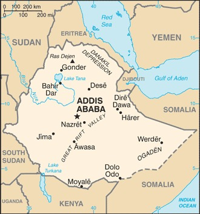
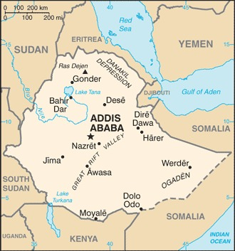

-
Introduction :: Ethiopia
-
Background:Unique among African countries, the ancient Ethiopian monarchy maintained its freedom from colonial rule with the exception of a short-lived Italian occupation from 1936-41. In 1974, a military junta, the Derg, deposed Emperor Haile SELASSIE (who had ruled since 1930) and established a socialist state. Torn by bloody coups, uprisings, wide-scale drought, and massive refugee problems, the regime was finally toppled in 1991 by a coalition of rebel forces, the Ethiopian People's Revolutionary Democratic Front (EPRDF). A constitution was adopted in 1994, and Ethiopia's first multiparty elections were held in 1995.
A border war with Eritrea in the late 1990s ended with a peace treaty in December 2000. In November 2007, the Eritrea-Ethiopia Border Commission (EEBC) issued specific coordinates as virtually demarcating the border and pronounced its work finished. Alleging that the EEBC acted beyond its mandate in issuing the coordinates, Ethiopia did not accept them and maintained troops in previously contested areas pronounced by the EEBC as belonging to Eritrea. This intransigence resulted in years of heightened tension between the two countries. In August 2012, longtime leader Prime Minister MELES Zenawi died in office and was replaced by his Deputy Prime Minister HAILEMARIAM Desalegn, marking the first peaceful transition of power in decades. Following a wave of popular dissent and anti-government protest that began in 2015, HAILEMARIAM resigned in February 2018 and ABIY Ahmed Ali took office in April 2018 as Ethiopia's first ethnic Oromo prime minister. In June 2018, ABIY announced Ethiopia would accept the border ruling of 2000, prompting rapprochement between Ethiopia and Eritrea that was marked with a peace agreement in July 2018 and a reopening of the border in September 2018. In November 2019, Ethiopia's nearly 30-year ethnic-based ruling coalition - the EPRDF - merged into a single unity party called the Prosperity Party, however, one of the four constituent parties refused to join. -
Geography :: Ethiopia
-
Location:Eastern Africa, west of SomaliaGeographic coordinates:8 00 N, 38 00 EMap references:AfricaArea:total: 1,104,300 sq kmland: 1,096,570 sq kmwater: 7,730 sq kmnote: area numbers are approximate since a large portion of the Ethiopia-Somalia border is undefinedcountry comparison to the world: 28Area - comparative:slightly less than twice the size of TexasArea comparison map:
 The World Factbook Field Image ModalAfrica :: Ethiopia Print
The World Factbook Field Image ModalAfrica :: Ethiopia Print Image Description
Image Descriptionslightly less than twice the size of Texas
Land boundaries:total: 5,925 kmborder countries (6): Djibouti 342 km, Eritrea 1033 km, Kenya 867 km, Somalia 1640 km, South Sudan 1299 km, Sudan 744 kmCoastline:0 km (landlocked)Maritime claims:none (landlocked)Climate:tropical monsoon with wide topographic-induced variationTerrain:high plateau with central mountain range divided by Great Rift ValleyElevation:mean elevation: 1,330 mlowest point: Danakil Depression -125 mhighest point: Ras Dejen 4,550 mNatural resources:small reserves of gold, platinum, copper, potash, natural gas, hydropowerLand use:agricultural land: 36.3% (2011 est.)arable land: 15.2% (2011 est.) / permanent crops: 1.1% (2011 est.) / permanent pasture: 20% (2011 est.)forest: 12.2% (2011 est.)other: 51.5% (2011 est.)Irrigated land:2,900 sq km (2012)Population distribution:highest density is found in the highlands of the north and middle areas of the country, particularly around the centrally located capital city of Addis Ababa; the far east and southeast are sparsely populated as shown in this population distribution mapNatural hazards:geologically active Great Rift Valley susceptible to earthquakes, volcanic eruptions; frequent droughts
volcanism: volcanic activity in the Great Rift Valley; Erta Ale (613 m), which has caused frequent lava flows in recent years, is the country's most active volcano; Dabbahu became active in 2005, forcing evacuations; other historically active volcanoes include Alayta, Dalaffilla, Dallol, Dama Ali, Fentale, Kone, Manda Hararo, and Manda-Inakir
Environment - current issues:deforestation; overgrazing; soil erosion; desertification; loss of biodiversity; water shortages in some areas from water-intensive farming and poor management; industrial pollution and pesticides contribute to air, water, and soil pollutionEnvironment - international agreements:party to: Biodiversity, Climate Change, Climate Change-Kyoto Protocol, Desertification, Endangered Species, Hazardous Wastes, Ozone Layer Protectionsigned, but not ratified: Environmental Modification, Law of the SeaGeography - note:note 1: landlocked - entire coastline along the Red Sea was lost with the de jure independence of Eritrea on 24 May 1993; Ethiopia is, therefore, the most populous landlocked country in the world; the Blue Nile, the chief headstream of the Nile by water volume, rises in T'ana Hayk (Lake Tana) in northwest Ethiopia
note 2: three major crops are believed to have originated in Ethiopia: coffee, grain sorghum, and castor bean -
People and Society :: Ethiopia
-
Population:108,113,150 (July 2020 est.)
note: estimates for this country explicitly take into account the effects of excess mortality due to AIDS; this can result in lower life expectancy, higher infant mortality, higher death rates, lower population growth rates, and changes in the distribution of population by age and sex than would otherwise be expected
country comparison to the world: 13Nationality:noun: Ethiopian(s)adjective: EthiopianEthnic groups:Oromo 34.9%, Amhara (Amara) 27.9%, Tigray (Tigrinya) 7.3%, Sidama 4.1%, Welaita 3%, Gurage 2.8%, Somali (Somalie) 2.7%, Hadiya 2.2%, Afar (Affar) .6%, other 12.6% (2016 est.)Languages:Oromo (official working language in the State of Oromiya) 33.8%, Amharic (official national language) 29.3%, Somali (official working language of the State of Sumale) 6.2%, Tigrigna (Tigrinya) (official working language of the State of Tigray) 5.9%, Sidamo 4%, Wolaytta 2.2%, Gurage 2%, Afar (official working language of the State of Afar) 1.7%, Hadiyya 1.7%, Gamo 1.5%, Gedeo 1.3%, Opuuo 1.2%, Kafa 1.1%, other 8.1%, English (major foreign language taught in schools), Arabic (2007 est.)Religions:Ethiopian Orthodox 43.8%, Muslim 31.3%, Protestant 22.8%, Catholic 0.7%, traditional .6%, other 0.8% (2016 est.)Demographic profile:Ethiopia is a predominantly agricultural country – more than 80% of the population lives in rural areas – that is in the early stages of demographic transition. Infant, child, and maternal mortality have fallen sharply over the past decade, but the total fertility rate has declined more slowly and the population continues to grow. The rising age of marriage and the increasing proportion of women remaining single have contributed to fertility reduction. While the use of modern contraceptive methods among married women has increased significantly from 6 percent in 2000 to 27 percent in 2012, the overall rate is still quite low.
Ethiopia’s rapid population growth is putting increasing pressure on land resources, expanding environmental degradation, and raising vulnerability to food shortages. With more than 40 percent of the population below the age of 15 and a fertility rate of over 5 children per woman (and even higher in rural areas), Ethiopia will have to make further progress in meeting its family planning needs if it is to achieve the age structure necessary for reaping a demographic dividend in the coming decades.
Poverty, drought, political repression, and forced government resettlement have driven Ethiopia’s internal and external migration since the 1960s. Before the 1974 revolution, only small numbers of the Ethiopian elite went abroad to study and then returned home, but under the brutal Derg regime thousands fled the country, primarily as refugees. Between 1982 and 1991 there was a new wave of migration to the West for family reunification. Since the defeat of the Derg in 1991, Ethiopians have migrated to escape violence among some of the country’s myriad ethnic groups or to pursue economic opportunities. Internal and international trafficking of women and children for domestic work and prostitution is a growing problem.
Age structure:0-14 years: 39.81% (male 21,657,152/female 21,381,628)15-24 years: 19.47% (male 10,506,144/female 10,542,128)25-54 years: 32.92% (male 17,720,540/female 17,867,298)55-64 years: 4.42% (male 2,350,606/female 2,433,319)65 years and over: 3.38% (male 1,676,478/female 1,977,857) (2020 est.)population pyramid: The World Factbook Field Image ModalAfrica :: Ethiopia Print
The World Factbook Field Image ModalAfrica :: Ethiopia Print Image DescriptionThis is the population pyramid for Ethiopia. A population pyramid illustrates the age and sex structure of a country's population and may provide insights about political and social stability, as well as economic development. The population is distributed along the horizontal axis, with males shown on the left and females on the right. The male and female populations are broken down into 5-year age groups represented as horizontal bars along the vertical axis, with the youngest age groups at the bottom and the oldest at the top. The shape of the population pyramid gradually evolves over time based on fertility, mortality, and international migration trends.
Image DescriptionThis is the population pyramid for Ethiopia. A population pyramid illustrates the age and sex structure of a country's population and may provide insights about political and social stability, as well as economic development. The population is distributed along the horizontal axis, with males shown on the left and females on the right. The male and female populations are broken down into 5-year age groups represented as horizontal bars along the vertical axis, with the youngest age groups at the bottom and the oldest at the top. The shape of the population pyramid gradually evolves over time based on fertility, mortality, and international migration trends.
For additional information, please see the entry for Population pyramid on the Definitions and Notes page under the References tab.Dependency ratios:total dependency ratio: 76.8youth dependency ratio: 70.6elderly dependency ratio: 6.3potential support ratio: 16 (2020 est.)Median age:total: 19.8 yearsmale: 19.6 yearsfemale: 20.1 years (2020 est.)country comparison to the world: 197Population growth rate:2.56% (2020 est.)country comparison to the world: 20Birth rate:31.6 births/1,000 population (2020 est.)country comparison to the world: 30Death rate:5.9 deaths/1,000 population (2020 est.)country comparison to the world: 170Net migration rate:-0.2 migrant(s)/1,000 population (2020 est.)country comparison to the world: 105Population distribution:highest density is found in the highlands of the north and middle areas of the country, particularly around the centrally located capital city of Addis Ababa; the far east and southeast are sparsely populated as shown in this population distribution mapUrbanization:urban population: 21.7% of total population (2020)rate of urbanization: 4.63% annual rate of change (2015-20 est.)total population growth rate v. urban population growth rate, 2000-2030: PDFMajor urban areas - population:4.794 million ADDIS ABABA (capital) (2020)Sex ratio:at birth: 1.03 male(s)/female0-14 years: 1.01 male(s)/female15-24 years: 1 male(s)/female25-54 years: 0.99 male(s)/female55-64 years: 0.97 male(s)/female65 years and over: 0.85 male(s)/femaletotal population: 1 male(s)/female (2020 est.)Mother's mean age at first birth:20 years (2016 est.)note: median age at first birth among women 25-29
Maternal mortality rate:401 deaths/100,000 live births (2017 est.)country comparison to the world: 26Infant mortality rate:total: 35.8 deaths/1,000 live birthsmale: 40.8 deaths/1,000 live birthsfemale: 30.5 deaths/1,000 live births (2020 est.)country comparison to the world: 43Life expectancy at birth:total population: 67.5 yearsmale: 65.5 yearsfemale: 69.7 years (2020 est.)country comparison to the world: 180Total fertility rate:4.14 children born/woman (2020 est.)country comparison to the world: 28Contraceptive prevalence rate:40.1% (2018)Drinking water source:improved: urban: 97% of populationrural: 61.7% of populationtotal: 68.9% of populationunimproved: urban: 3% of populationrural: 38.3% of populationtotal: 31.1% of population (2017 est.)Current Health Expenditure:3.5% (2017)Physicians density:0.1 physicians/1,000 population (2017)Hospital bed density:0.3 beds/1,000 population (2016)Sanitation facility access:improved: urban: 49.7% of populationrural: 5.7% of populationtotal: 14.7% of populationunimproved: urban: 50.3% of populationrural: 94.3% of populationtotal: 85.3% of population (2017 est.)HIV/AIDS - adult prevalence rate:1.1% (2019 est.)country comparison to the world: 43HIV/AIDS - people living with HIV/AIDS:670,000 (2019 est.)country comparison to the world: 13HIV/AIDS - deaths:12,000 (2019 est.)country comparison to the world: 19Major infectious diseases:degree of risk: very high (2020)food or waterborne diseases: bacterial and protozoal diarrhea, hepatitis A, and typhoid fevervectorborne diseases: malaria and dengue feverwater contact diseases: schistosomiasisanimal contact diseases: rabiesrespiratory diseases: meningococcal meningitisObesity - adult prevalence rate:4.5% (2016)country comparison to the world: 185Children under the age of 5 years underweight:21.1% (2019)country comparison to the world: 20Education expenditures:4.7% of GDP (2015)country comparison to the world: 70Literacy:definition: age 15 and over can read and writetotal population: 51.8%male: 57.2%female: 44.4% (2017)School life expectancy (primary to tertiary education):total: 9 yearsmale: 8 yearsfemale: 8 years (2012)Unemployment, youth ages 15-24:total: 25.2%male: 17.1%female: 30.9% (2016 est.)country comparison to the world: 49 -
Government :: Ethiopia
-
Country name:conventional long form: Federal Democratic Republic of Ethiopiaconventional short form: Ethiopialocal long form: Ityop'iya Federalawi Demokrasiyawi Ripebliklocal short form: Ityop'iyaformer: Abyssinia, Italian East Africaabbreviation: FDREetymology: the country name derives from the Greek word "Aethiopia," which in classical times referred to lands south of Egypt in the Upper Nile regionGovernment type:federal parliamentary republicCapital:name: Addis Ababageographic coordinates: 9 02 N, 38 42 Etime difference: UTC+3 (8 hours ahead of Washington, DC, during Standard Time)etymology: the name in Amharic means "new flower" and was bestowed on the city in 1889, three years after its foundingAdministrative divisions:9 ethnically based regional states (kililoch, singular - kilil) and 2 self-governing administrations* (astedaderoch, singular - astedader); Adis Abeba* (Addis Ababa), Afar, Amara (Amhara), Binshangul Gumuz, Dire Dawa*, Gambela Hizboch (Gambela Peoples), Hareri Hizb (Harari People), Oromiya (Oromia), Sumale (Somali), Tigray, Ye Debub Biheroch Bihereseboch na Hizboch (Southern Nations, Nationalities and Peoples)Independence:oldest independent country in Africa and one of the oldest in the world - at least 2,000 years (may be traced to the Aksumite Kingdom, which coalesced in the first century B.C.)National holiday:Derg Downfall Day (defeat of MENGISTU regime), 28 May (1991)Constitution:history: several previous; latest drafted June 1994, adopted 8 December 1994, entered into force 21 August 1995amendments: proposals submitted for discussion require two-thirds majority approval in either house of Parliament or majority approval of one-third of the State Councils; passage of amendments other than constitutional articles on fundamental rights and freedoms and the initiation and amendment of the constitution requires two-thirds majority vote in a joint session of Parliament and majority vote by two thirds of the State Councils; passage of amendments affecting rights and freedoms and amendment procedures requires two-thirds majority vote in each house of Parliament and majority vote by all the State CouncilsLegal system:civil law systemInternational law organization participation:has not submitted an ICJ jurisdiction declaration; non-party state to the ICCtCitizenship:citizenship by birth: nocitizenship by descent only: at least one parent must be a citizen of Ethiopiadual citizenship recognized: noresidency requirement for naturalization: 4 yearsSuffrage:18 years of age; universalExecutive branch:chief of state: President SAHLE-WORK Zewde (since 25 October 2018)head of government: Prime Minister ABIY Ahmed (since 2 April 2018); Deputy Prime Minister DEMEKE Mekonnen Hassen (since 29 November 2012); note - Prime Minister HAILEMARIAM Desalegn (since 21 September 2012) resigned on 15 February 2018 and continued as caretaker until the new prime minister was sworn into office on 2 April 2018cabinet: Council of Ministers selected by the prime minister and approved by the House of People's Representativeselections/appointments: president indirectly elected by both chambers of Parliament for a 6-year term (eligible for a second term); snap election held on 25 October 2018 due to resignation of President MULATA Teshome (next election postponed by Prime Minister ABIY due to the COVID-19 pandemic); prime minister designated by the majority party following legislative electionselection results: SAHLE-WORK Zewde elected president; Parliament vote - 659 (unanimous)note: SAHLE-WORK Zewde is the first female elected head of state in Ethiopia; she is currently the only female president in Africa. Former President Dr. Mulatu TESHOME resigned on 25 October 2018, one year ahead of finishing his six-year term.Legislative branch:description: bicameral Parliament consists of:
House of Federation or Yefedereshein Mikir Bete (153 seats; members indirectly elected by state assemblies to serve 5-year terms)
House of People's Representatives or Yehizb Tewokayoch Mekir Bete (547 seats; members directly elected in single-seat constituencies by simple majority vote; 22 seats reserved for minorities; all members serve 5-year terms)elections: House of Federation - last held 24 May 2015 (next originally scheduled on 29 August 2020 but postponed a year due to the COVID-19 pandemic)
House of People's Representatives - last held on 24 May 2015 (next originally scheduled on 29 August 2020 but postponed to 2021 due to the COVID-19 pandemic)election results: House of Federation - percent of vote by coalition/party - NA; seats by coalition/party - NA; composition - men 104, women 49, percent of women 32%
House of Representatives - percent of vote by coalition/party - NA; seats by coalition/party - EPRDF 501, SPDP 24, BGPDUP 9, ANDP 8, GPUDM 3, APDO 1, HNL 1; composition - men 335, women 212, percent of women 38.8%; note - total Parliament percent of women 37.3%note: House of Federation is responsible for interpreting the constitution and federal-regional issues and the House of People's Representatives is responsible for passing legislationJudicial branch:highest courts: Federal Supreme Court (consists of 11 judges); note - the House of Federation has jurisdiction for all constitutional issuesjudge selection and term of office: president and vice president of Federal Supreme Court recommended by the prime minister and appointed by the House of People's Representatives; other Supreme Court judges nominated by the Federal Judicial Administrative Council (a 10-member body chaired by the president of the Federal Supreme Court) and appointed by the House of People's Representatives; judges serve until retirement at age 60subordinate courts: federal high courts and federal courts of first instance; state court systems (mirror structure of federal system); sharia courts and customary and traditional courtsPolitical parties and leaders:Afar National Democratic Party or ANDP [Taha AHMED]
Argoba People Democratic Organization or APDO
Benishangul Gumuz People's Democratic Unity Party or BGPDUP
Ethiopian Federal Democratic Unity Forum or MEDREK or FORUM [Beyene PETROS] (includes ESD-SCUP, OFC, SLM, and UTDS)
Ethiopia Citizens for Social Justice or ECSJ Party (formed in May 2019 from 7 other parties, including Patriotic Genbot 7, Ethiopian Democratic Party (EDP), All Ethiopian Democratic Party (AEDP), Semayawi Party, New Generation Party, Gambella Regional Movement (GRM), Unity for Democracy and Justice (UDJ) Party [Berhanu Negu])
Prosperity Party or PP [ABIY Ahmed] (created in November 2019 from member parties of the former Ethiopian People's Revolutionary Democratic Front or EPRDF, which included the Amhara National Democratic Movement (ANDM), Oromo People's Democratic Organization (OPDO), Southern Ethiopian People's Democratic Movement (SEPDM), Tigray People's Liberation Front (TPLF), plus other ERPRF allies
Ethiopian Social Democracy-Southern Coalition Unity Party or ESD-SCUP
Gambella Peoples Unity Democratic Movement or GPUDM
Harari National League or HNL [Murad ABDULHADI]
Oromo Fderalist Congress or OFC
Sidama Liberaton Movement or SLM
Somali People's Democratic Party or SPDP
Union of Tigraians for Democracy & Sovergnty or UTDS
Tigray Independence Party [Girmay BERHE] (2020)International organization participation:ACP, AfDB, AU, COMESA, EITI (candidate country), FAO, G-24, G-77, IAEA, IBRD, ICAO, ICRM, IDA, IFAD, IFC, IFRCS, IGAD, ILO, IMF, IMO, Interpol, IOC, IOM, IPU, ISO, ITSO, ITU, ITUC (NGOs), MIGA, NAM, OPCW, PCA, UN, UNAMID, UNCTAD, UNESCO, UNHCR, UNIDO, UNISFA, UNMIL, UN Security Council (temporary), UNOCI, UNWTO, UPU, WCO, WFTU (NGOs), WHO, WIPO, WMO, WTO (observer)Diplomatic representation in the US:chief of mission: Ambassador Ato FITSUM Arega (since 9 April 2019)chancery: 3506 International Drive NW, Washington, DC 20008telephone: [1] (202) 364-1200FAX: [1] (202) 587-0195consulate(s) general: Los Angeles, Seattleconsulate(s): Houston, New YorkDiplomatic representation from the US:chief of mission: Ambassador Michael RAYNOR (since 3 October 2017)telephone: [251] 11 130-6000embassy: Entoto Street, P.O. Box 1014, Addis Ababamailing address: P.O. Box 1014, Addis AbabaFAX: [251] 11 124-2401Flag description:three equal horizontal bands of green (top), yellow, and red, with a yellow pentagram and single yellow rays emanating from the angles between the points on a light blue disk centered on the three bands; green represents hope and the fertility of the land, yellow symbolizes justice and harmony, while red stands for sacrifice and heroism in the defense of the land; the blue of the disk symbolizes peace and the pentagram represents the unity and equality of the nationalities and peoples of Ethiopianote: Ethiopia is the oldest independent country in Africa, and the three main colors of her flag (adopted ca. 1895) were so often appropriated by other African countries upon independence that they became known as the Pan-African colors; the emblem in the center of the current flag was added in 1996
National symbol(s):Abyssinian lion (traditional), yellow pentagram with five rays of light on a blue field (promoted by current government); national colors: green, yellow, redNational anthem:name: "Whedefit Gesgeshi Woud Enat Ethiopia" (March Forward, Dear Mother Ethiopia)lyrics/music: DEREJE Melaku Mengesha/SOLOMON Lulunote: adopted 1992
-
Economy :: Ethiopia
-
Economic overview:
Ethiopia - the second most populous country in Africa - is a one-party state with a planned economy. For more than a decade before 2016, GDP grew at a rate between 8% and 11% annually – one of the fastest growing states among the 188 IMF member countries. This growth was driven by government investment in infrastructure, as well as sustained progress in the agricultural and service sectors. More than 70% of Ethiopia’s population is still employed in the agricultural sector, but services have surpassed agriculture as the principal source of GDP.
Ethiopia has the lowest level of income-inequality in Africa and one of the lowest in the world, with a Gini coefficient comparable to that of the Scandinavian countries. Yet despite progress toward eliminating extreme poverty, Ethiopia remains one of the poorest countries in the world, due both to rapid population growth and a low starting base. Changes in rainfall associated with world-wide weather patterns resulted in the worst drought in 30 years in 2015-16, creating food insecurity for millions of Ethiopians.
The state is heavily engaged in the economy. Ongoing infrastructure projects include power production and distribution, roads, rails, airports and industrial parks. Key sectors are state-owned, including telecommunications, banking and insurance, and power distribution. Under Ethiopia's constitution, the state owns all land and provides long-term leases to tenants. Title rights in urban areas, particularly Addis Ababa, are poorly regulated, and subject to corruption.
Ethiopia’s foreign exchange earnings are led by the services sector - primarily the state-run Ethiopian Airlines - followed by exports of several commodities. While coffee remains the largest foreign exchange earner, Ethiopia is diversifying exports, and commodities such as gold, sesame, khat, livestock and horticulture products are becoming increasingly important. Manufacturing represented less than 8% of total exports in 2016, but manufacturing exports should increase in future years due to a growing international presence.
The banking, insurance, telecommunications, and micro-credit industries are restricted to domestic investors, but Ethiopia has attracted roughly $8.5 billion in foreign direct investment (FDI), mostly from China, Turkey, India and the EU; US FDI is $567 million. Investment has been primarily in infrastructure, construction, agriculture/horticulture, agricultural processing, textiles, leather and leather products.
To support industrialization in sectors where Ethiopia has a comparative advantage, such as textiles and garments, leather goods, and processed agricultural products, Ethiopia plans to increase installed power generation capacity by 8,320 MW, up from a capacity of 2,000 MW, by building three more major dams and expanding to other sources of renewable energy. In 2017, the government devalued the birr by 15% to increase exports and alleviate a chronic foreign currency shortage in the country.
GDP real growth rate:10.9% (2017 est.)8% (2016 est.)10.4% (2015 est.)country comparison to the world: 4Inflation rate (consumer prices):15.7% (2019 est.)13.9% (2018 est.)10.8% (2017 est.)country comparison to the world: 217Credit ratings:Fitch rating: B (2014)Moody's rating: B2 (2020)Standard & Poors rating: B (2014)GDP (purchasing power parity) - real:$203.196 billion (2019 est.)$187.656 billion (2018 est.)$175.681 billion (2017 est.)note: data are in 2010 dollars
GDP (official exchange rate):$92.154 billion (2019 est.)GDP - per capita (PPP):$537 (2019 est.)$509 (2018 est.)$489 (2017 est.)note: data are in 2010 dollars
country comparison to the world: 220Gross national saving:32.1% of GDP (2017 est.)32.7% of GDP (2016 est.)32.4% of GDP (2015 est.)country comparison to the world: 26GDP - composition, by sector of origin:agriculture: 34.8% (2017 est.)industry: 21.6% (2017 est.)services: 43.6% (2017 est.)GDP - composition, by end use:household consumption: 69.6% (2017 est.)government consumption: 10% (2017 est.)investment in fixed capital: 43.5% (2017 est.)investment in inventories: -0.1% (2017 est.)exports of goods and services: 8.1% (2017 est.)imports of goods and services: -31.2% (2017 est.)Ease of Doing Business Index scores:48.0 (2020)Agriculture - products:cereals, coffee, oilseed, cotton, sugarcane, vegetables, khat, cut flowers; hides, cattle, sheep, goats; fishIndustries:food processing, beverages, textiles, leather, garments, chemicals, metals processing, cementIndustrial production growth rate:10.5% (2017 est.)country comparison to the world: 13Labor force:52.82 million (2017 est.)country comparison to the world: 11Labor force - by occupation:agriculture: 72.7%industry: 7.4%services: 19.9% (2013 est.)Unemployment rate:17.5% (2012 est.)18% (2011 est.)country comparison to the world: 184Population below poverty line:29.6% (2014 est.)Budget:revenues: 11.24 billion (2017 est.)expenditures: 13.79 billion (2017 est.)Taxes and other revenues:13.9% (of GDP) (2017 est.)country comparison to the world: 203Budget surplus (+) or deficit (-):-3.2% (of GDP) (2017 est.)country comparison to the world: 139Public debt:54.2% of GDP (2017 est.)53.2% of GDP (2016 est.)country comparison to the world: 83Fiscal year:8 July - 7 JulyCurrent account balance:-$6.551 billion (2017 est.)-$6.574 billion (2016 est.)country comparison to the world: 186Exports:$3.23 billion (2017 est.)$2.814 billion (2016 est.)country comparison to the world: 131Exports - partners:Sudan 23.3%, Switzerland 10.2%, China 8.1%, Somalia 6.6%, Netherlands 6.2%, US 4.7%, Germany 4.7%, Saudi Arabia 4.6%, UK 4.6% (2017)Exports - commodities:coffee (27%, by value), oilseeds (17%), edible vegetables including khat (17%), gold (13%), flowers (7%), live animals (7%), raw leather products (3%), meat products (3%)Imports:$15.59 billion (2017 est.)$14.69 billion (2016 est.)country comparison to the world: 92Imports - commodities:machinery and aircraft (14%, by value), metal and metal products, (14%), electrical materials, (13%), petroleum products (12%), motor vehicles, (10%), chemicals and fertilizers (4%)Imports - partners:China 24.1%, Saudi Arabia 10.1%, India 6.4%, Kuwait 5.3%, France 5.2% (2017)Reserves of foreign exchange and gold:$3.013 billion (31 December 2017 est.)$3.022 billion (31 December 2016 est.)country comparison to the world: 110Debt - external:$26.05 billion (31 December 2017 est.)$24.82 billion (31 December 2016 est.)country comparison to the world: 87Exchange rates:birr (ETB) per US dollar -25 (2017 est.)21.732 (2016 est.)21.732 (2015 est.)21.55 (2014 est.)19.8 (2013 est.) -
Energy :: Ethiopia
-
Electricity access:population without electricity: 60 million (2019)electrification - total population: 47% (2019)electrification - urban areas: 96% (2019)electrification - rural areas: 34% (2019)Electricity - production:11.15 billion kWh (2016 est.)country comparison to the world: 99Electricity - consumption:9.062 billion kWh (2016 est.)country comparison to the world: 100Electricity - exports:166 million kWh (2015 est.)country comparison to the world: 78Electricity - imports:0 kWh (2016 est.)country comparison to the world: 146Electricity - installed generating capacity:2.784 million kW (2016 est.)country comparison to the world: 99Electricity - from fossil fuels:3% of total installed capacity (2016 est.)country comparison to the world: 206Electricity - from nuclear fuels:0% of total installed capacity (2017 est.)country comparison to the world: 88Electricity - from hydroelectric plants:86% of total installed capacity (2017 est.)country comparison to the world: 11Electricity - from other renewable sources:11% of total installed capacity (2017 est.)country comparison to the world: 76Crude oil - production:0 bbl/day (2018 est.)country comparison to the world: 134Crude oil - exports:0 bbl/day (2015 est.)country comparison to the world: 121Crude oil - imports:0 bbl/day (2015 est.)country comparison to the world: 125Crude oil - proved reserves:428,000 bbl (1 January 2018 est.)country comparison to the world: 98Refined petroleum products - production:0 bbl/day (2017 est.)country comparison to the world: 143Refined petroleum products - consumption:74,000 bbl/day (2016 est.)country comparison to the world: 89Refined petroleum products - exports:0 bbl/day (2015 est.)country comparison to the world: 153Refined petroleum products - imports:69,970 bbl/day (2015 est.)country comparison to the world: 67Natural gas - production:0 cu m (2017 est.)country comparison to the world: 130Natural gas - consumption:0 cu m (2017 est.)country comparison to the world: 144Natural gas - exports:0 cu m (2017 est.)country comparison to the world: 102Natural gas - imports:0 cu m (2017 est.)country comparison to the world: 123Natural gas - proved reserves:24.92 billion cu m (1 January 2018 est.)country comparison to the world: 72Carbon dioxide emissions from consumption of energy:12.18 million Mt (2017 est.)country comparison to the world: 99
-
Communications :: Ethiopia
-
Telephones - fixed lines:total subscriptions: 1,095,946subscriptions per 100 inhabitants: 1.04 (2019 est.)country comparison to the world: 73Telephones - mobile cellular:total subscriptions: 38,147,361subscriptions per 100 inhabitants: 36.2 (2019 est.)country comparison to the world: 41Telecommunication systems:general assessment: Ethio Telecom maintained a monopoly over telecommunication services until recently and is now part-private; new expansion of LTE services; in 2019 govt. approved legislations which opened the market to competition and provides much needed foreign investment; one of the tech companies is Chinese company Huawei; govt. reduces tariffs by up to 50% in 2018, the result is an increase in data and voice traffic; govt. launches mobile app as part of e-govt initiative to build tech city (2020)domestic: fixed-line subscriptions at 1 per 100 while mobile-cellular stands at 36 per 100; the number of mobile telephones is increasing steadily (2019)international: country code - 251; open-wire to Sudan and Djibouti; microwave radio relay to Kenya and Djibouti; 2 domestic satellites provide the national trunk service; satellite earth stations - 3 Intelsat (1 Atlantic Ocean and 2 Pacific Ocean) (2016)note: the COVID-19 outbreak is negatively impacting telecommunications production and supply chains globally; consumer spending on telecom devices and services has also slowed due to the pandemic's effect on economies worldwide; overall progress towards improvements in all facets of the telecom industry - mobile, fixed-line, broadband, submarine cable and satellite - has moderatedBroadcast media:6 public TV stations broadcasting nationally and 10 public radio broadcasters; 7 private radio stations and 19 community radio stations (2017)Internet country code:.etInternet users:total: 19,118,470percent of population: 18.62% (July 2018 est.)country comparison to the world: 37Broadband - fixed subscriptions:total: 580,120subscriptions per 100 inhabitants: 1 (2017 est.)country comparison to the world: 81
-
Transportation :: Ethiopia
-
National air transport system:number of registered air carriers: 1 (2020)inventory of registered aircraft operated by air carriers: 75annual passenger traffic on registered air carriers: 11,501,244 (2018)annual freight traffic on registered air carriers: 2,089,280,000 mt-km (2018)Civil aircraft registration country code prefix:ET (2016)Airports:57 (2013)country comparison to the world: 81Airports - with paved runways:total: 17 (2017)over 3,047 m: 3 (2017)2,438 to 3,047 m: 8 (2017)1,524 to 2,437 m: 4 (2017)under 914 m: 2 (2017)Airports - with unpaved runways:total: 40 (2013)2,438 to 3,047 m: 3 (2013)1,524 to 2,437 m: 9 (2013)914 to 1,523 m: 20 (2013)under 914 m: 8 (2013)Railways:total: 659 km (Ethiopian segment of the 756 km Addis Ababa-Djibouti railroad) (2017)standard gauge: 659 km 1.435-m gauge (2017)
note: electric railway with redundant power supplies; under joint control of Djibouti and Ethiopia and managed by a Chinese contractor
country comparison to the world: 105Roadways:total: 120,171 km (2018)country comparison to the world: 40Merchant marine:total: 11by type: general cargo 9, oil tanker 2 (2019)country comparison to the world: 154Ports and terminals:Ethiopia is landlocked and uses the ports of Djibouti in Djibouti and Berbera in Somalia -
Military and Security :: Ethiopia
-
Military and security forces:Ethiopian National Defense Force (ENDF): Ground Forces, Ethiopian Air Force (Ye Ityopya Ayer Hayl, ETAF) (2020)
note(s): in January 2020 the Ethiopian Government announced it had re-established a navy, which was disbanded in 1996; in March 2019 Ethiopia signed a defense cooperation agreement with France which stipulated that France would support the establishment of an Ethiopian navy
in 2018, Ethiopia established a Republican Guard for protecting senior officials; the Republican Guard is a military unit accountable to the Prime Minister
Ethiopian law allows each regional government to have paramilitary units to provide security within their territoryMilitary expenditures:0.7% of GDP (2019)0.7% of GDP (2018)0.7% of GDP (2017)0.7% of GDP (2016)0.7% of GDP (2015)country comparison to the world: 136Military and security service personnel strengths:estimates for the size of the Ethiopian National Defense Force (ENDF) vary; approximately 150,000 active duty troops, including about 3,000 Air Force personnel (no personnel numbers available for the newly-reestablished Navy) (2020)Military equipment inventories and acquisitions:the ENDF's inventory is comprised mostly of Soviet-era equipment; since 2010, Russia and Ukraine are the leading suppliers of largely second-hand weapons and equipment to the ENDF, followed by China and Hungary; Ethiopia has a modest industrial defense base centered on small arms and licensed production of light-armored vehicles (2019 est.)Military deployments:10-15,000 Somalia (4,500 for AMISOM); 800 Sudan (UNAMID); 3,600 Sudan (UNISFA); 2,100 South Sudan (UNMISS) (2020)Military service age and obligation:18 years of age for voluntary military service; no compulsory military service, but the military can conduct callups when necessary and compliance is compulsory (2013)Military - note:each of the nine states has a regional, a special police force, or both that report to regional civilian authorities; local militias operate across the country in loose and varying coordination with these regional police, the Ethiopian Federal Police (EFP), and the military; the EFP reports to the Ministry of Peace, which was created in October of 2018 (2019) -
Terrorism :: Ethiopia
-
Terrorist group(s):al-Shabaab (2020)note: details about the history, aims, leadership, organization, areas of operation, tactics, targets, weapons, size, and sources of support of the group(s) appear(s) in Appendix-T
-
Transnational Issues :: Ethiopia
-
Disputes - international:
Eritrea and Ethiopia agreed to abide by the 2002 Eritrea-Ethiopia Boundary Commission's (EEBC) delimitation decision, but neither party responded to the revised line detailed in the November 2006 EEBC Demarcation Statement; the undemarcated former British administrative line has little meaning as a political separation to rival clans within Ethiopia's Ogaden and southern Somalia's Oromo region; Ethiopian forces invaded southern Somalia and routed Islamist courts from Mogadishu in January 2007; "Somaliland" secessionists provide port facilities in Berbera and trade ties to landlocked Ethiopia; civil unrest in eastern Sudan has hampered efforts to demarcate the porous boundary with Ethiopia; Ethiopia's construction of a large dam (the Grand Ethiopian Renaissance Dam) on the Blue Nile since 2011 has become a focal point of relations with Egypt and Sudan; as of 2020, four years of three-way talks between the three capitals over operating the dam and filling its reservoir had made little progress; Ethiopia began filling the dam in July 2020
Refugees and internally displaced persons:refugees (country of origin): 362,787 (South Sudan), 202,217 (Somalia), 178,559 (Eritrea), 43,729 (Sudan) (2020)IDPs: 1,735,481 (includes conflict- and climate-induced IDPs, excluding unverified estimates from the Amhara region; border war with Eritrea from 1998-2000; ethnic clashes; and ongoing fighting between the Ethiopian military and separatist rebel groups in the Somali and Oromia regions; natural disasters; intercommunal violence; most IDPs live in Sumale state) (2019)Illicit drugs:transit hub for heroin originating in Southwest and Southeast Asia and destined for Europe, as well as cocaine destined for markets in southern Africa; cultivates qat (khat) for local use and regional export, principally to Djibouti and Somalia (legal in all three countries); the lack of a well-developed financial system limits the country's utility as a money laundering center
Africa ::
Ethiopia

{kind=link}